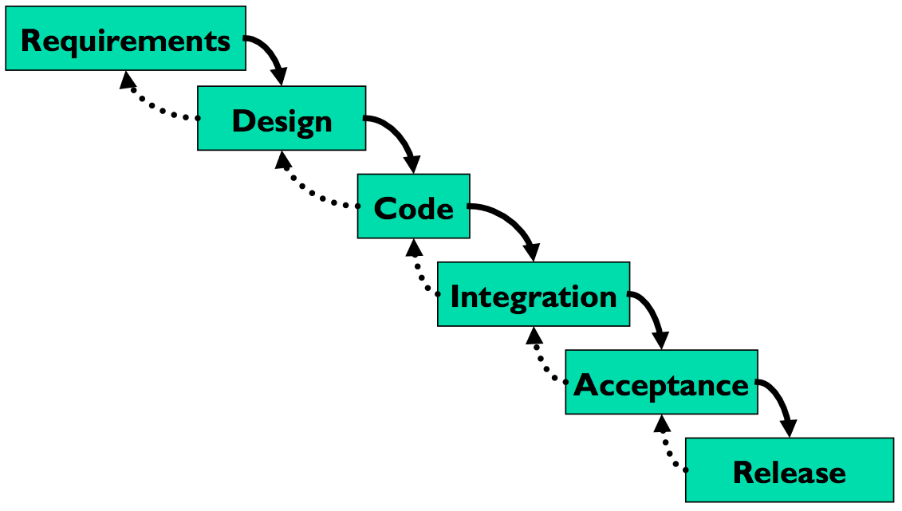

Computer Prototypes
Computer Prototype
- Interactive software simulation
- High-fidelity in look & feel
- Low-fidelity in depth
- Paper prototype had a human simulating the backend; computer prototype doesn't
- Computer prototype may be **horizontal**: covers most features, but no backend
So at some point we have to depart from paper and move our prototypes into software. A typical computer prototype is a **horizontal** prototype. It's high-fi in look and feel, but low-fi in depth - there's no backend behind it. Where a human being simulating a paper prototype can generate new content on the fly in response to unexpected user actions, a computer prototype cannot.
What You Can Learn From Computer Prototypes
- Everything you learn from a paper prototype, plus:
- Screen layout
- Is it clear, overwhelming, distracting, complicated?
- Can users find important elements?
- Colors, fonts, icons, other elements
- Interactive feedback
- Do users notice & respond to status bar messages, cursor changes, other feedback
- Efficiency issues
- Controls big enough? Too close together? Scrolling list is too long?
Computer prototypes help us get a handle on the graphic design and dynamic feedback of the interface.
Why Use Prototyping Tools?
- Faster than coding
- No debugging
- Easier to change or throw away
- Don't let your UI toolkit do your graphic design
One way to build a computer prototype is just to program it directly in an implementation language, like Java or C++, using a user interface toolkit, like Swing or MFC. If you don't hook in a backend, or use stubs instead of your real backend, then you've got a horizontal prototype.
But it's often better to use a **prototyping tool** instead. Building an interface with a tool is usually faster than direct coding, and there's no code to debug. It's easier to change it, or even throw it away if your design turns out to be wrong. Recall Cooper's concerns about prototyping: your computer prototype may become so elaborate and precious that it becomes your final implementation, even though (from a software engineering point of view) it might be sloppily designed and unmaintainable.
Also, when you go directly from paper prototype to code, there's a tendency to let your UI toolkit handle all the graphic design for you. That's a mistake. For example, Java has layout managers that automatically arrange the components of an interface. Layout managers are powerful tools, but they produce horrible interfaces when casually or lazily used. A prototyping tool will help you envision your interface and get its graphic design right first, so that later when you move to code, you know what you're trying to persuade the layout manager to produce.
Even with a prototyping tool, computer prototypes can still be a tremendous amount of work. When drag & drop was being considered for Microsoft Excel, a couple of Microsoft summer interns were assigned to develop a prototype of the feature using Visual Basic. They found that they had to implement a substantial amount of basic spreadsheet functionality just to test drag & drop. It took two interns their entire summer to build the prototype that proved that drag & drop was useful. Actually adding the feature to Excel took a staff programmer only a week. This isn't a fair comparison, of course - maybe six intern-months was a cost worth paying to mitigate the risk of one fulltimer-week, and the interns certainly learned a lot. But building a computer prototype can be a slippery slope, so don't let it suck you in too deeply. Focus on what you want to test, i.e., the design risk you need to mitigate, and only prototype that.
Computer Prototyping Techniques
- Storyboard
- Sequence of painted screenshots
- Sometimes connected by hyperlinks ("hotspots")
- Form builder
- Real windows assembled from a palette of widgets (buttons, text fields, labels, etc.)
- Wizard of Oz
- Computer frontend, human backend
There are two major techniques for building a computer prototype.
A **storyboard** is a sequence (a graph data structure, really) of fixed screens. Each screen has one or more **hotspots** that you can click on to jump to another screen. Sometimes the transitions between screens also involve some animation in order to show a dynamic effect, like mouse-over feedback or drag-drop feedback.
A **form builder** is a tool for drawing real, working interfaces by dragging widgets from a palette and positioning them on a window.
A **Wizard of Oz** prototype is a kind of hybrid of a computer prototype and a paper prototype; the user interacts with a computer, but there's a human behind the scenes figuring out how the user interface should respond.
Storyboarding Tools
- Photoshop
- Balsamiq Mockup
- Mockingbird

Photoshop is classically used for storyboarding (also called "wireframe" prototypes), but there are more specialized tools that are increasing in popularity. [Balsamiq Mockup](https://balsamiq.com/products/mockups/) and [Mockingbird](https://gomockingbird.com/home) each offer a drawing canvas and a palette of graphical objects that look like widgets that can be dragged onto it. These tools are different from form builders, however, in that the result is just a picture - the widgets aren't real, and they aren't functional. Other popular tools include [Marvel](https://marvelapp.com/), [InVision](https://www.invisionapp.com/), and [proto.io](https://proto.io/).
These wireframe tools strive for some degree of "sketchiness" in their look, so these are really medium-fidelity tools. Not as low fidelity as hand sketch, but still not what the final interface will look like. Some tools attempt to bridge this gap by automatically generating functional code from wireframes, but in most cases, you'll have to still spend a significant amount of time customizing the generated code to suit your needs.
Pros & Cons of Storyboarding
Pros
Cons
- No text entry
- Widgets aren't active
- "Hunt for the hotspot"
The big advantage of storyboarding is similar to the advantage of paper: you can draw anything on a storyboard. That frees your creativity in ways that a form builder can't, with its fixed palette of widgets.
The disadvantages come from the storyboard's static nature. Some tools let you link the pictures together with hyperlinks, but even then all you can do is click, not really interact. Watching a real user in front of a storyboard often devolves into a game of "**hunt for the hotspot**", like children's software where the only point is to find things on the screen to click on and see what they do. The hunt-for-the-hotspot effect means that storyboards are largely useless for user testing, unlike paper prototypes. In general, horizontal computer prototypes are better evaluated with other techniques, like heuristic evaluation (which we'll discuss in a future reading).
Form Builders
- Mac Interface Builder
- Qt Designer
- FlexBuilder
- Silverlight
Visual Basic
Tips
- Use absolute positioning for now
Here are some form builder tools.
Pros & Cons of Form Builders
Pros
- Actual controls, not just pictures of them
- Can hook in some backend if you need it
- But then you won't want to throw it away
Cons
- Limits thinking to standard widgets
- Less helpful for rich graphical interfaces
Unlike storyboards, form builders use actual working widgets, not just static pictures. So the widgets look the same as they will in the final implementation (assuming you're using a compatible form builder - a prototype in Visual Basic may not look like a final implementation in Java).
Also, since form builders usually have an implementation language underneath them - which may even be the same implementation language that you'll eventually use for your final interface -- you can also hook in as much or as little backend as you want.
On the down side, form builders give you a fixed palette of standard widgets, which limits your creativity as a designer, and which makes form builders far less useful for prototyping rich graphical interfaces, e.g., a circuit-drawing editor. Form builders are great for the menus and widgets that surround a graphical interface, but can't simulate the "insides" of the application window.
Wizard of Oz Prototype
- Software simulation with a human in the loop to help
- "Wizard of Oz" = "man behind the curtain"
- Wizard is usually but not always hidden
- Often used to simulate future technology
- Speech recognition
- Learning
- Issues
- Two UIs to worry about: user's and wizard's
- Wizard has to be mechanical
Part of the power of paper prototypes is the depth you can achieve by having a human simulate the backend. A **Wizard of Oz prototype** also uses a human in the backend, but the frontend is an actual computer system instead of a paper mockup. The term Wizard of Oz comes from the movie of the same name, in which the wizard was a man hiding behind a curtain, controlling a massive and impressive display.
In a Wizard of Oz prototype, the "wizard" is usually but not always hidden from the user. Wizard of Oz prototypes are often used to simulate future technology that isn't available yet, particularly artificial intelligence. A famous example was the listening typewriter (Gould, Conti, & Hovanyecz, "[Composing letters with a simulated listening typewriter](http://dl.acm.org/citation.cfm?id=358100)," *CACM* v26 n4, April 1983). This study sought to compare the effectiveness and acceptability of isolated-word speech recognition, which was the state of the art in the early 80's, with continuous speech recognition, which wasn't possible yet. The interface was a speech-operated text editor. Users looked at a screen and dictated into a microphone, which was connected to a typist (the wizard) in another room. Using a keyboard, the wizard operated the editor showing on the user's screen.
The wizard's skill was critical in this experiment. She could type 80 wpm, she practiced with the simulation for several weeks (with some iterative design on the simulator to improve her interface), and she was careful to type exactly what the user said, even exclamations and parenthetical comments or asides. The computer helped make her responses a more accurate simulation of computer speech recognition. It looked up every word she typed in a fixed dictionary, and any words that were not present were replaced with X's, to simulate misrecognition. Furthermore, in order to simulate the computer's ignorance of context, homophones were replaced with the most common spelling, so "done" replaced "dun", and "in" replaced "inn". The result was an extremely effective illusion. Most users were surprised when told (midway through the experiment) that a human was listening to them and doing the typing.
Thinking and acting mechanically is harder for a wizard than it is for a paper prototype simulator, because the tasks for which Wizard of Oz testing is used tend to be more "intelligent". It helps if the wizard is personally familiar with the capabilities of similar interfaces, so that a realistic simulation can be provided. (See Maulsby et al., "[Prototyping an intelligent agent through Wizard of Oz](http://dl.acm.org/citation.cfm?id=169215)", *CHI 1993*.) It also helps if the wizard's interface can intentionally dumb down the responses, as was done in the Gould study.
A key challenge in designing a Wizard of Oz prototype is that you actually have two interfaces to worry about: the user's interface, which is presumably the one you're testing, and the wizard's.
Answer this question: [Wizard of Oz Prototyping](https://docs.google.com/forms/d/e/1FAIpQLSet6XBAbRxIQzC0zoX1SemD_S8Jq-xhdLD_gB9dG78uEs1yaA/viewform?usp=sf_link)
User-Centered Design
User-Centered Design
- Iterative design
- Early focus on users and tasks
- Constant evaluation
Now we'll zoom out a little bit, and talk about the user-centered design process.
The standard approach to designing user interfaces is **user-centered design**, which has three components.
We'll talk about the first two today; we'll defer evaluation (testing with users) until a later reading.
Iterative Design

Traditional Software Engineering Process: Waterfall Model

Let's contrast the iterative design process against another way. The **waterfall model** was one of the earliest carefully-articulated design processes for software development. It models the design process as a sequence of stages. Each stage results in a concrete product - a requirements document, a design, a set of coded modules - that feeds into the next stage. Each stage also includes its own **validation**: the design is validated against the requirements, the code is validated (unit-tested) against the design, etc.
The biggest improvement of the waterfall model over previous (chaotic) approaches to software development is the discipline it puts on developers to **think first, and code second**. Requirements and designs generally precede the first line of code.
If you've taken a software engineering course, you've experienced this process yourself. The course staff probably handed you a set of requirements for the software you had to build --- e.g., the specification of a chat client or AntiBattleship. (In the real world, identifying these requirements would be part of your job as software developers.) You were then expected to meet certain milestones for each stage of your project, and each milestone had a concrete product: (1) a design document; (2) code modules that implemented certain functionality; (3) an integrated system.
Validation is not always sufficient; sometimes problems are missed until the next stage. Trying to code the design may reveal flaws in the design - e.g., that it can't be implemented in a way that meets the performance requirements. Trying to integrate may reveal bugs in the code that weren't exposed by unit tests. So the waterfall model implicitly needs **feedback between stages**.
The danger arises when a mistake in an early stage - such as a missing requirement - isn't discovered until a very late stage - like acceptance testing. Mistakes like this can force costly rework of the intervening stages. (That box labeled "Code" may look small, but you know from experience that it isn't!)
Waterfall Model Is Bad for UI Design
- User interface design is risky
- So we're likely to get it wrong
- Users are not involved in validation until acceptance testing
- So we won't find out until the end
- UI flaws often cause changes in requirements and design
- So we have to throw away carefully-written and tested code
Although the waterfall model is useful for some kinds of software development, it's very poorly suited to user interface development.
First, UI development is inherently **risky**. UI design is hard for all the reasons we discussed in the first class. (You are not the user; the user is always right, except when the user isn't; users aren't designers either.) We don't (yet) have an easy way to predict how whether a UI design will succeed.
Second, in the usual way that the waterfall model is applied, **users appear in the process in only two places**: requirements analysis and acceptance testing. Hopefully we asked the users what they needed at the beginning (requirements analysis), but then we code happily away and don't check back with the users until we're ready to present them with a finished system. So if we screwed up the design, the waterfall process won't tell us until the end.
Third, when UI problems arise, they often **require dramatic fixes**: new requirements or new design. We saw in Lecture 1 that slapping on patches doesn't fix serious usability problems.
Iterative Design
**Iterative design** offers a way to manage the inherent risk in user interface design. In iterative design, the software is refined by repeated trips around a design cycle: first imagining it (design), then realizing it physically (implementation), then testing it (evaluation).
In other words, we have to admit to ourselves that we aren't going to get it right on the first try, and plan for it.
Using the results of evaluation, we redesign the interface, build new prototypes, and do more evaluation.
Eventually, hopefully, the process produces a sufficiently usable interface.
Sometimes you just iterate until you're satisfied or run out of time and resources, but a more principled approach is to set usability goals for your system. For example, an e-commerce web site might set a goal that users should be able to complete a purchase in less than 30 seconds.
Many of the techniques we'll learn in this course are optimizations for the iterative design process: design guidelines reduce the number of iterations by helping us make better designs; cheap prototypes and discount evaluation techniques reduce the cost of each iteration. But even more important than these techniques is the basic realization that in general, **you won't get it right the first time**. If you learn nothing else about user interfaces from this class, I hope you learn this.
You might object to this, though. At a high level, iterative design just looks like the worst-case waterfall model, where we made it all the way from design to acceptance testing before discovering a design flaw that *forced* us to repeat the process. Is iterative design just saying that we're going to have to repeat the waterfall over and over and over? What's the trick here?
Spiral Model

The **spiral model** offers a way out of the dilemma. We build room for several iterations into our design process, and we do it by making the early iterations as cheap as possible.
The radial dimension of the spiral model corresponds to the cost of the iteration step - or, equivalently, its **fidelity** or **accuracy**. For example, an early implementation might be a paper sketch or mockup. It's low fidelity, only a pale shadow of what it would look and behave like as interactive software. But it's incredibly cheap to make, and we can evaluate it by showing it to users and asking them questions about it.
Early Prototypes Can Detect Usability Problems

Remember this Hall of Shame candidate from the first class? This dialog's design problems would have been easy to catch if it were only tested as a simple paper sketch, in an early iteration of a spiral design. At that point, changing the design would have cost only another sketch, instead of a day of coding.
Iterative Design of User Interfaces
- Early iterations use cheap prototypes
- **Parallel design** is feasible: build & test multiple prototypes to explore design alternatives
- Later iterations use richer implementations, after UI risk has been mitigated
- More iterations generally mean better UI
- Only mature iterations are seen by the world
Why is the spiral model a good idea? Risk is greatest in the early iterations, when we know the least. So we put our least commitment into the early implementations. Early prototypes are made to be thrown away. If we find ourselves with several design alternatives, we can build multiple prototypes (**parallel design**) and evaluate them, without much expense. The end of this reading will make more arguments for the value of parallel design.
After we have evaluated and redesigned several times, we have (hopefully) learned enough to avoid making a major UI design error. Then we actually implement the UI - which is to say, we build a prototype that we intend to keep. Then we evaluate it again, and refine it further.
The more iterations we can make, the more refinements in the design are possible. We're hill-climbing here, not exploring the design space randomly. We keep the parts of the design that work, and redesign the parts that don't. So we should get a better design if we can do more iterations.
Case Study of User-Centered Design: The Olympic Message System
- Cheap prototypes
- Scenarios
- User guides
- Simulation (Wizard of Oz)
- Prototyping tools (IBM Voice Toolkit)
- Iterative design
- 200 (!) iterations for user guide
- Evaluation at every step
- You are not the user
- Non-English speakers had trouble with alphabetic entry on telephone keypad

The Olympic Message System is a classic demonstration of the effectiveness of user-centered design (Gould et al, "[The 1984 Olympic Message System](http://dl.acm.org/citation.cfm?id=30402)", *CACM*, v30 n9, Sept 1987). The OMS designers used a variety of cheap prototypes: scenarios (stories envisioning a user interacting with the system), manuals, and simulation (in which the experimenter read the system's prompts aloud, and the user typed responses into a terminal). All of these prototypes could be (and were) shown to users to solicit reactions and feedback.
Iteration was pursued aggressively. The user guide went through 200 iterations!
The OMS also has some interesting cases reinforcing the point that the designers cannot rely entirely on themselves for evaluating usability. Most prompts requested numeric input ("press 1, 2, or 3"), but some prompts needed alphabetic entry ("enter your three-letter country code"). Non-English speakers - particularly from countries with non-Latin languages - found this confusing, because, as one athlete reported in an early field test, "you have to read the keys differently." The designers didn't remove the alphabetic prompts, but they did change the user guide's examples to use only uppercase letters, just like the telephone keys.
A 3-min video about OMS [can be found on YouTube](http://youtube.com/watch?v=W6UYpXc4czM&feature=related). Check it out---it includes a mime demonstrating the system.